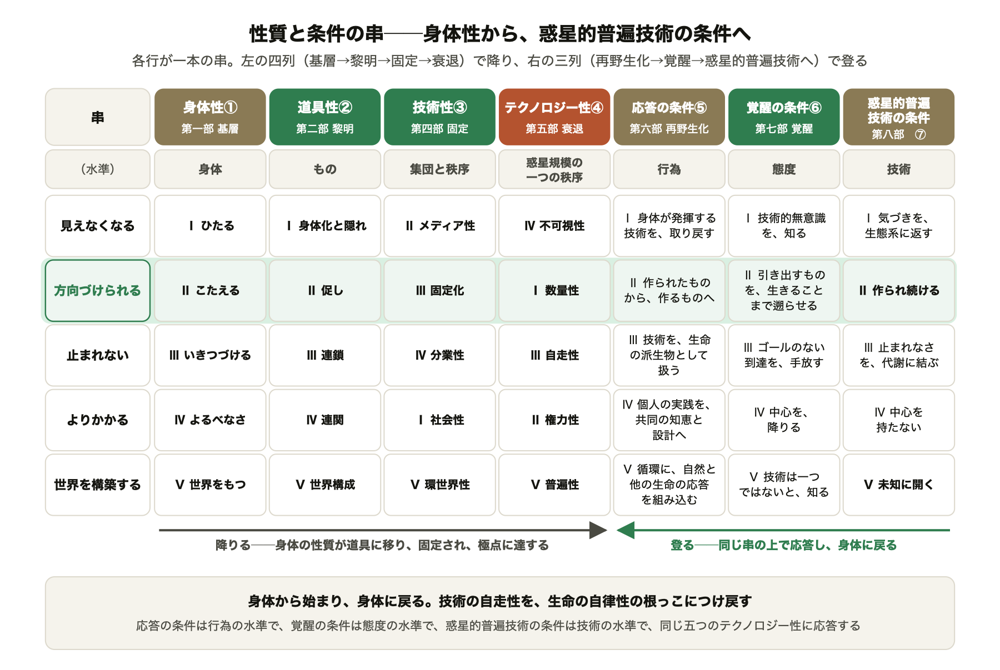
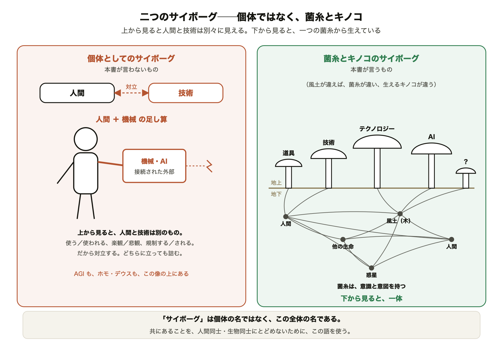

10 ／ 背骨 10 三層と流れ
三層と循環
技術は、基層・固定・デザインの三層からなる。固定は歴史であって、必然ではない。開け口は二つ。

惑星的普遍技術——未開の未来へ 全体設計図 v1210 / 16
貫くテーマ 20 本は、どう組まれ、どの章に入っているか
v12 ／ 2026-10-19 ／ 44 章・411,304 字
書籍設計室
序説で定義を置き、五つの部で底まで降り、三つの部で登り直す。背骨が集まる山は三つ。
旧 15 本はすべて生きている。v5〜v12 の軸を足し、重なるものを束ねて 20 本。五つの群に分けて見る（番号は本の流れの順）。
技術は、生命が生環境から何かを引き出す働きであり、人間と分かれていない。その引き出し方が、三層に固まる。
問うのは「人間とは何か」ではなく「どのような道具を持つのか」。道具は新しい身体であり、夢であり、解けないジレンマでもある。
技術はよく働くほど見えなくなり、止まれなくなる。生まれたものが母胎を見下ろし、物語が未来を方向づけ、後工程の制度では届かない。
テクノロジーは捨てられず、外部もない。だから内側から目覚め、守る主語を入れ替える。
技術は一つではなく、何を引き出すかもまだ決まっていない。だから未来は未開のまま開かれている。五本の串が、その全体を数える。
各行が一本の串。左の四列で降り、右の三列で登る。身体から始まり、身体に戻る。

技術は、基層・固定・デザインの三層からなる。固定は歴史であって、必然ではない。開け口は二つ。
第八部はほぼ全背骨が ○ 以上。第二部は 4〜7 の主が並ぶ装備の部。第五部は降りる側でいちばん濃い。
| 背骨 | は | 序 | 一 | 二 | 三 | 四 | 五 | 六 | 七 | 八 | 終 | 出現 | ◎の章 | ||
|---|---|---|---|---|---|---|---|---|---|---|---|---|---|---|---|
| A | 1 | 技術は、引き出す | △ | ◎ | ◎ | ○ | ○ | ○ | ◎ | ○ | ○ | ○ | 39 | 序2・1-1・1-4・5-4 | |
| 2 | 技術は生命から（基層） | △ | ○ | ◎ | ○ | ○ | ○ | ◎ | ◎ | ○ | ◎ | △ | 39 | 1-2・1-3・5-4・6-2・8-2 | |
| 3 | 不可分──菌糸とキノコ | ◎ | ○ | ○ | ○ | ○ | ◎ | ○ | ◎ | △ | 29 | 序2・6-2・8-1・8-3・8-5 | |||
| 10 | 三層と流れ | △ | ◎ | ◎ | ○ | ◎ | ◎ | ○ | △ | ○ | ◎ | 39 | 序2・1-3・3-2・4-3・8-1・8-2 | ||
| B | 4 | どのような道具を持つのか | △ | ◎ | ◎ | ◎ | ○ | ○ | ○ | ◎ | ○ | ◎ | 26 | 序2・1-1・1-4・2-1・2-2・6-4・8-5 | |
| 5 | 原初のサイボーグと自在性 | △ | ◎ | ◎ | ○ | ◎ | ○ | ○ | 18 | 序3・2-1・6-3 | |||||
| 6 | 夢 | ○ | △ | ◎ | ○ | △ | ◎ | ◎ | △ | 22 | 2-2・7-2・8-5 | ||||
| 7 | 道具のジレンマ | ○ | ○ | ◎ | ○ | ○ | ◎ | ○ | ○ | △ | 20 | 2-3・5-4 | |||
| C | 8 | 見えていればいるほど見えない | ◎ | ◎ | ◎ | ◎ | ○ | ○ | ○ | ○ | ○ | △ | 38 | 序1・1-4・2-2・3-3 | |
| 9 | 転倒と相関の手前 | ◎ | ○ | ○ | ◎ | ○ | ◎ | ◎ | ○ | ○ | 34 | 序1・3-3・5-2・6-1・6-2 | |||
| 11 | 自律と自走 | ◎ | ◎ | ○ | ○ | ◎ | ◎ | ○ | ○ | 31 | 序3・1-3・5-3・6-2 | ||||
| 12 | SFの逆説 | ○ | △ | ○ | △ | ◎ | ○ | △ | 11 | 5-4 | |||||
| 13 | 設計・使い方・規制では届かない | ◎ | ○ | ○ | ○ | ◎ | ○ | ○ | ○ | ◎ | 28 | 序2・4-3・8-4 | |||
| D | 16 | 守る主語の転換 | ○ | ○ | △ | ○ | ◎ | ○ | ○ | 12 | 6-1 | ||||
| 17 | 内側から | ◎ | △ | △ | ○ | △ | ○ | ◎ | ◎ | 21 | 序1・7-3・7-4・8-5 | ||||
| 18 | 技術的意識の覚醒 | ◎ | △ | ○ | ○ | ○ | △ | ○ | ◎ | ○ | 28 | 序3・7-1・7-4 | |||
| E | 14 | 技術は一つではない | ○ | ○ | ○ | △ | ○ | ◎ | ◎ | ◎ | ◎ | ◎ | 38 | 4-1・4-2・5-1・5-4・6-4・7-3・8-2・8-5 | |
| 15 | 未知の扉 | ◎ | ○ | △ | ○ | ◎ | ○ | ○ | ◎ | 22 | 序2・5-4・8-5 | ||||
| 19 | 未開の未来 | ○ | ◎ | △ | △ | ○ | △ | ◎ | ○ | ◎ | ○ | 20 | 序3・6-4・8-1・8-3・8-5 | ||
| 20 | 五本の串 | ◎ | ◎ | ◎ | △ | ◎ | ◎ | ◎ | ◎ | ◎ | 26 | 序3・各部末マトリクス・8-M |
序説で予告し、本論で展開し、第八部で回収する。本書はこの三段を 23 の論点で踏んでいる。
三段そろう論点は 23。回収が一文だけ 2（二つの中心、原初のサイボーグ）。予告だけで本論にも回収にも出ない 2（鏡・五つの視点）。序説の予告なしで三つの部を渡る 1（夢：2-2 ▸ 7-2 ▸ 8-5）。
定型句は著者の「繰り返してほしい」の指示。どの章で鳴らすかが、背骨の通り道になる。主要 8 句。
| 定型句（要約） | 背骨 | は | 序 | 一 | 二 | 三 | 四 | 五 | 六 | 七 | 八 | 終 | v12 の状態 | |
|---|---|---|---|---|---|---|---|---|---|---|---|---|---|---|
| B1 | 生態系を守ったうえで、人間の命が守られる | 16 | 序1 | 6-1 | 8-28-5 | 予定どおり。8-5 は「の命」が落ちる | ||||||||
| B2 | まず自分を守る、人間を守る発想を捨てる | 16 | 6-1 | 7-1 | 8-18-5 | 序説に無い | ||||||||
| B4 | 技術は内側から作られる | 17 | 7-4 | 8-2 | 予定どおり | |||||||||
| B5 | 知っているテクノロジーの時代は終わった | 15 | 5-4 | 7-1・第八部に無い | ||||||||||
| B7 | 基層の可能性は無限に近い | 2・10 | 2-3 | 4-34-4 | 5-4 | 7-4 | 8-5 | 文言どおりの文は無い（言い換えのみ） | ||||||
| B13 | 道具は夢であり、自由であり、希望である | 6 | 2-2 | 回収（7-2・8-5）で使わない | ||||||||||
| B14 | キノコは必ず止まり、朽ちて、新たな菌糸を生む | 3・11 | 5-3 | 6-2 | 第八部の回収に無い。6-2 は文言ずれ | |||||||||
| B18 | 原初のサイボーグとは、現代のテクノロジーにも… | 5 | 序3 | 2-1 | 6-3 | 8-5 | 2-1 に別の定義が残る（高-2） |
6-1 文言どおり 2-3 言い換え。定型句は B1〜B19 の 19。うち B15・B16・B18・B19 は 2-1、B11・B12 は 8-5、B17 は序1 にだけ置く「一点の句」。整理のときも各句 2〜3 か所は残す。
原初のサイボーグは、現代のテクノロジーにもつながれ、原初的なあり方も実践できる者。その名は、菌糸とキノコの全体の上に立つ。


緊張：背骨 5 は「〜する者」、背骨 3 は「全体の名」。二つの向きを両立させる一文が 2-1 に要る（Ⅱ 高-2 の修正案⑤）。
構成の形は固まった。重いのは、予告と回収の繰り返し、部末の表、脚注。著者の判断待ち（提案書 13 §4）。
降りる側（基層〜衰退）21.4 万字 52％、登る側 15.2 万字 37％。
長い章：夢 21.5k・世界制圧 20.8k・メディテーション 17.8k・道具の本性 16.2k。最短 4.3k（覆い隠す秩序）の約 5 倍。
八部と鏡はそのまま。技術マトリクスを巻末付録へ移し、登る側の条件（⑤〜⑦）は本文に溶かす。予告・場面の重複・脚注・道案内を削り、回収の章を一節に。
411,304 → 約 35 万字（−15％） 作業 2〜2.5 日
どの案でも：差分を 5 章→2 か所に／鏡を一度呼び戻す／九つの常識と「問いと答え」を対応させる／夢の線を呼び合わせる／夢の章（21.5k）を二章に。
執筆室が参照する基準。章の中身ではなく、背骨の通り道を守るために使う。
analysis/v12/I_貫くテーマ_v12.md（背骨・マトリクス・定型句）
analysis/v12/II_矛盾_v12.md
structure/13_structure-simplification-proposal.md